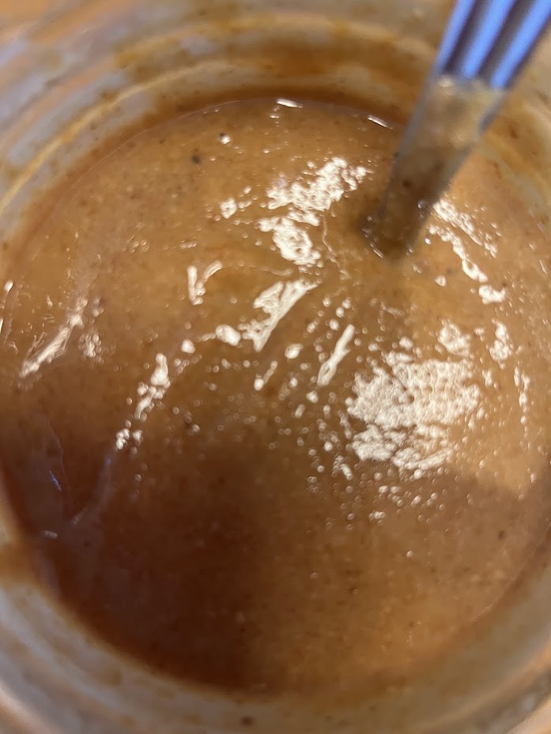

Pâte à tartiner noisette – Michalak
⏱️ Plusieurs étapes
🔥 Niveau : Moyen
👥 Environ 750 g de pâte



Étapes
- Torréfiez les noisettes : 15 minutes à 180°C pour développer les arômes.
- 1ère étape : le pralin
Réalisez un caramel à sec avec 120 g de sucre. Mélangez-le ensuite avec 120 g de noisettes torréfiées. - 2ème étape : la pâte de noisette
Mixez les noisettes torréfiées avec autant de sucre glace (150 g de noisettes + 150 g de sucre glace). - 3ème étape : le gianduja
Mélangez la pâte de noisette avec le chocolat au lait fondu. - 4ème étape : la pâte à tartiner
Mélangez :- Gianduja lait noisette
- Pralin
- Poudre de lait
- Huile de pépins de raisin
- Cacao amer
- Sel